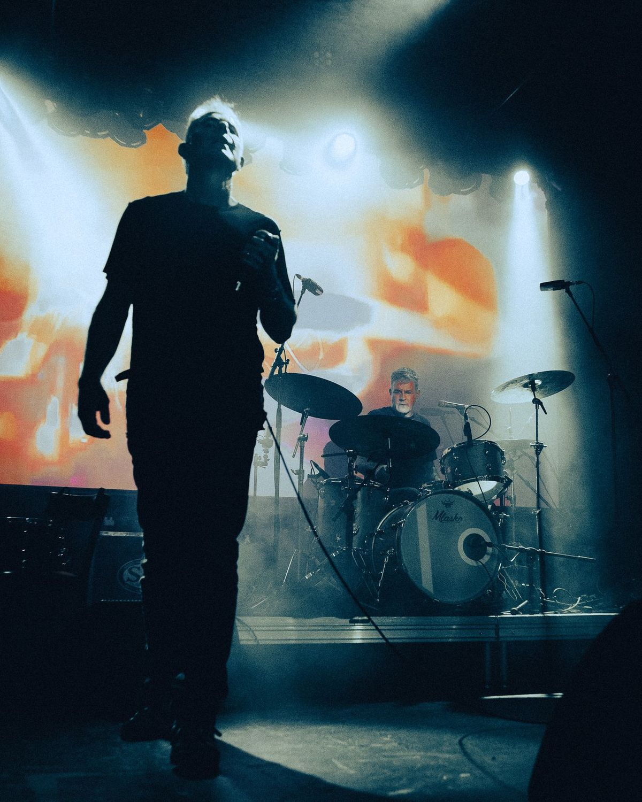
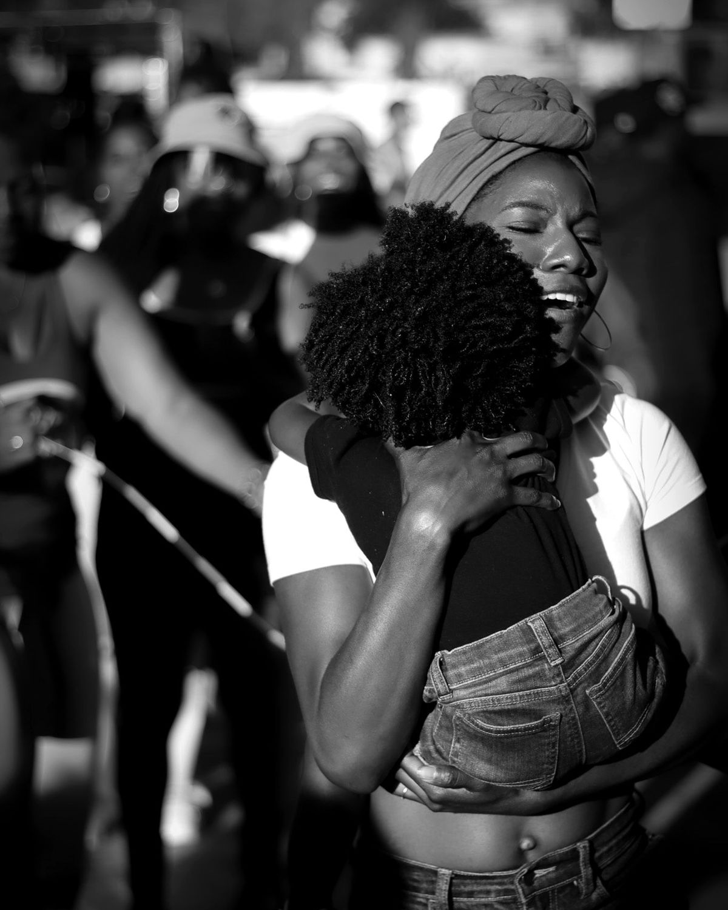
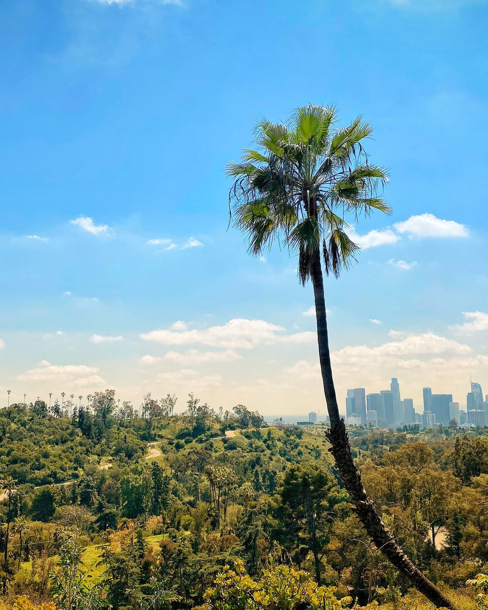
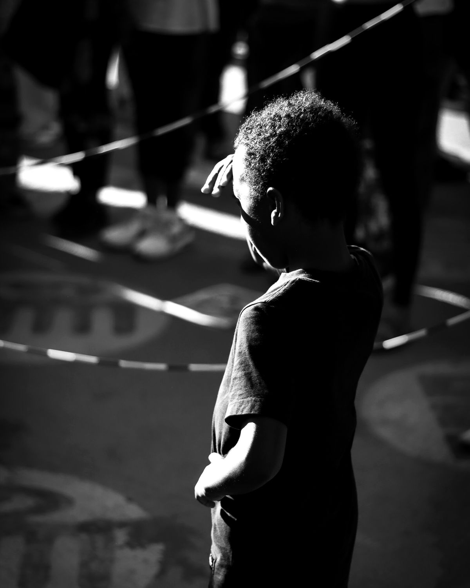

Events, stages, and the people in them.
thecityofangles.com ↗
Of the street. Of the people. Of the culture.
dirtyblackblood.com ↗
Los Angeles, printed like postcards.
picturepostcardsfromla.com ↗
People, places, things.
andregraves.com ↗